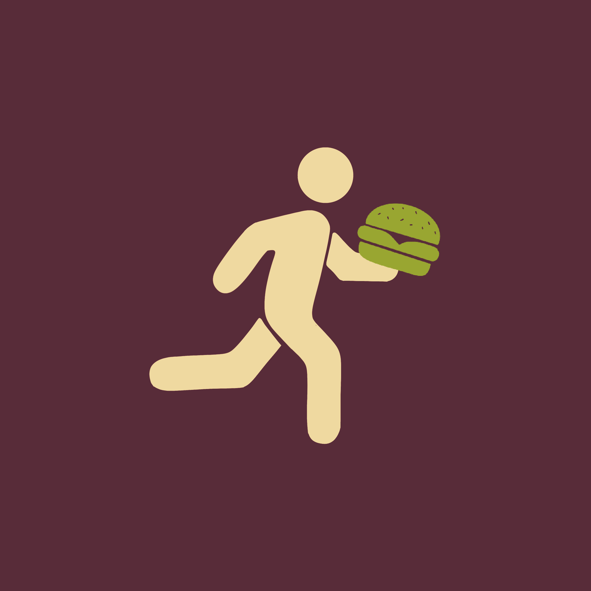
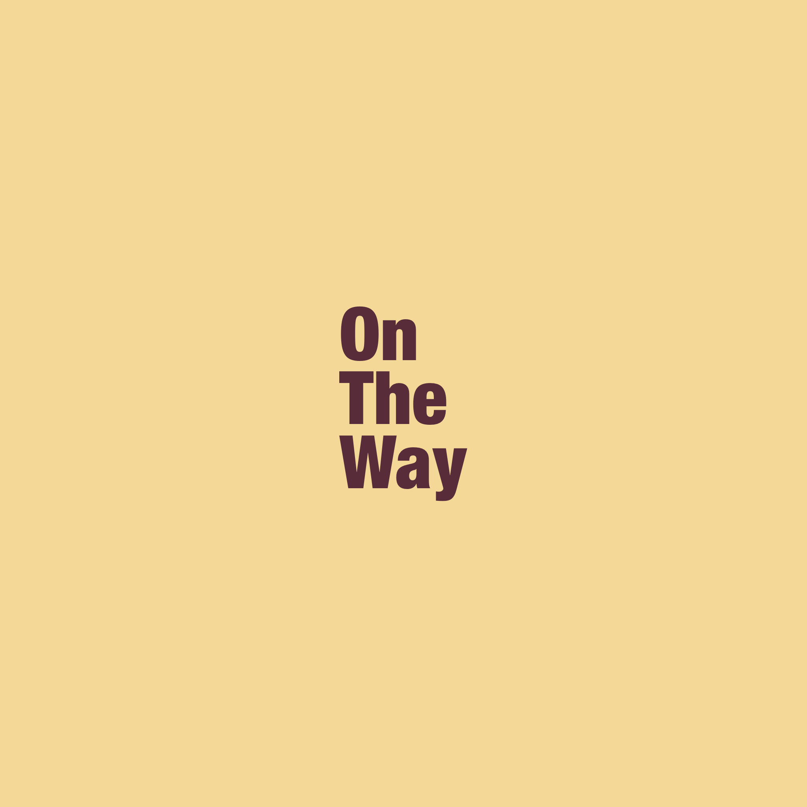

Apps ask what's near me. I want to know what's on the way.
Proximity doesn't mean convenience.
Map tools rank food by distance from where you are. But a place 0.3 miles away can still cost 15 minutes off your route. The closest place to you isn't always the closest to your trip.
No app shows what a stop costs your trip.
Same trip, four apps. Here's where each one sends you.
Detour time only once you're driving.
Doesn't know where you're going.
Doesn't know where you're going.
Ranked by the minutes each stop adds.
youwhere you're goingrestaurants each app shows first
Rank by detour, not distance.
Enter where you're starting and where you're going, hit Plan trip, and the route shows up with restaurants along it.
Built with JavaScript, Mapbox GL JS, the Mapbox Search Box API and Turf.js. Deployed on Vercel.
What I chose, and what I cut.
Ranking
Results rank by distance from the route first, ratings second. I cut popularity sorting because it kept pulling people far off the path.
Coverage
I split the route into thirds. More sample points barely found more places but added a request each and slowed results down.
Filtering
Showing everything recreated the "nearby" problem, so anything more than about 0.3 miles (0.5 km) from the route is hidden.
Scope
No accounts, reservations or multi-stop trips yet. First I wanted to prove people pick food by how little it adds to their trip.
"I didn't know that I needed this. It seemed like it would exist but just doesn't."
Tester commuting from Tribeca to ChelseaWhat I learned
Location data is messier than it looks. Address matching broke, so I switched to polygon boundaries for NYC.
What I'd measure
Minutes added per stop against the top "nearby" result on the same route.
What's next
A mobile version, multi-stop trips and cities beyond NYC.

